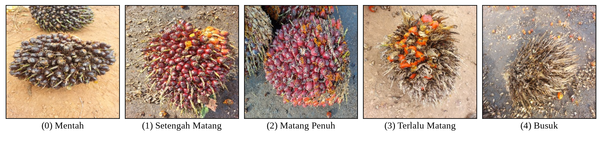
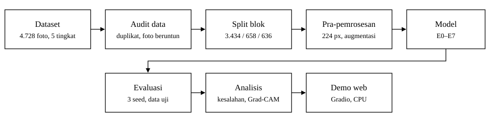
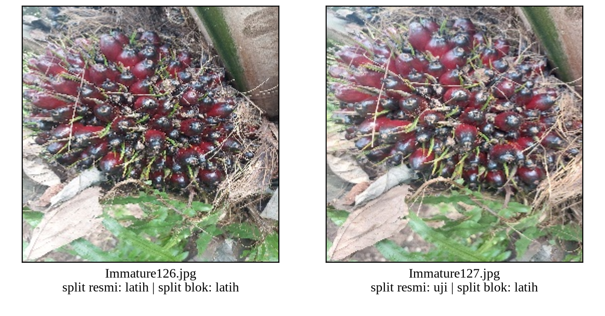

| Yedija Teofilus Yonatan | 412024011 |
| Juanito Dante | 412024001 |
| Steven Iwan | 412024010 |
Abstrak—Penilaian tingkat kematangan tandan buah segar (TBS) kelapa sawit di pabrik masih dilakukan secara visual oleh petugas sortasi, sehingga hasilnya dapat berbeda antarpetugas. Proyek ini membangun model klasifikasi lima tingkat kematangan (mentah, setengah matang, matang penuh, terlalu matang, dan busuk) dari satu foto. Karena tingkat kematangan bersifat berurutan, kami membandingkan EfficientNet-B0 pra-latih yang dilatih dengan loss cross-entropy (CE) dan dengan loss ordinal CORN. Data yang digunakan adalah dataset publik berisi 4.728 foto lapangan dari Kalimantan Tengah. Audit data menunjukkan bahwa foto bernomor berurutan sering memotret tandan yang sama, dan 92% foto uji pada pembagian data resmi memiliki foto tetangga di data latih. Karena itu, evaluasi utama memakai split blok yang menjaga foto berurutan tetap dalam satu bagian. Pada split blok, kedua model mencapai macro-F1 sekitar 0,91, jauh di atas baseline warna (0,66), tetapi CORN tidak lebih baik daripada CE (macro-F1 0,905 dibanding 0,914; MAE 0,121 dibanding 0,111 tingkat). Pada split resmi, skor kedua model tampak sekitar 5 poin lebih tinggi. Model dijalankan sebagai demo web dengan waktu inferensi sekitar 12 ms per foto pada CPU.
Indonesia adalah produsen kelapa sawit terbesar di dunia dengan luas areal 16,83 juta hektare, dan menguasai lebih dari 55% ekspor minyak sawit dunia [1]. Mutu tandan buah segar (TBS) yang dijual pekebun ditentukan terutama oleh tingkat kematangannya. Tandan yang dipanen terlalu dini menghasilkan minyak lebih sedikit, sedangkan tandan yang terlambat dipanen menaikkan kadar asam lemak bebas [2]. Di pabrik kelapa sawit, petugas sortasi memeriksa sebagian tandan secara visual lalu memotong berat kiriman bila menemukan tandan mentah [2]. Penilaian manual seperti ini bersifat subjektif dan sering memicu sengketa antara pekebun dan pabrik [3].
Pengolahan citra tradisional pernah dipakai untuk masalah ini, misalnya dengan rata-rata nilai RGB, tetapi metode tersebut membutuhkan pencahayaan yang terkontrol [3]. Foto di kebun diambil dengan ponsel yang berbeda, di bawah terik atau teduh, dan dengan latar yang beragam. Kematangan juga tidak hanya terlihat dari warna, tetapi juga dari tekstur buah, buah yang mulai rontok, dan kekeringan tandan (Gambar 1). Convolutional neural network (CNN) dapat mempelajari isyarat tersebut langsung dari contoh foto [4], dan dengan transfer learning dari ImageNet [5], CNN dapat dilatih dengan beberapa ribu foto saja.
Kelima tingkat kematangan bersifat berurutan. Salah menilai tandan mentah sebagai setengah matang lebih ringan akibatnya daripada menilainya sebagai terlalu matang. Dataset yang kami gunakan memang disusun sebagai data ordinal [6], tetapi loss cross-entropy memperlakukan semua kesalahan sama berat. Karena itu kami juga menguji CORN [7], yaitu metode regresi ordinal untuk jaringan saraf.
Tujuan proyek ini adalah: (1) membangun model yang menerima satu foto RGB tandan dan mengeluarkan tingkat kematangan 0–4; (2) membandingkan CE dan CORN dengan metrik yang memperhitungkan jarak kesalahan; (3) mengevaluasi model dengan pembagian data yang tidak bocor; dan (4) menyajikan model dalam demo web. Batasannya, data hanya berasal dari satu wilayah dan setiap foto berisi satu tandan, sehingga hasilnya belum berlaku untuk foto tumpukan tandan di pabrik.

Alur kerja proyek ditunjukkan pada Gambar 2. Semua pengaturan disimpan dalam berkas konfigurasi YAML di repositori proyek agar eksperimen dapat diulang.

Dataset yang dipakai adalah An Ordinal Dataset for Ripeness Level Classification in Oil Palm Fruit Quality Grading dari Mendeley Data [6] dengan lisensi CC BY 4.0. Dataset ini berisi 4.728 foto JPG berukuran 256×256 piksel yang diambil di perkebunan Kalimantan Tengah dengan berbagai ponsel, pencahayaan, dan latar. Penyusun dataset juga menyediakan pembagian data resmi secara acak (Tabel 1).
| Kelas | Total | Split resmi | Split blok |
|---|---|---|---|
| Mentah | 758 | 530 / 113 / 115 | 580 / 98 / 80 |
| Setengah Matang | 1.405 | 982 / 210 / 213 | 1.025 / 180 / 200 |
| Matang Penuh | 1.489 | 1.042 / 222 / 225 | 1.069 / 220 / 200 |
| Terlalu Matang | 665 | 465 / 98 / 102 | 460 / 100 / 105 |
| Busuk | 411 | 287 / 61 / 63 | 300 / 60 / 51 |
| Total | 4.728 | 3.306 / 704 / 718 | 3.434 / 658 / 636 |
Audit data. Sebelum pelatihan, kami memeriksa duplikat dengan MD5 dan dHash, dan menemukan 1 pasang berkas identik serta 13 pasang foto yang hampir identik. Kami juga menemukan bahwa foto dengan nomor berkas berurutan sering memotret tandan yang sama dari sudut yang sedikit berbeda (Gambar 3). Dari 40 pasangan berurutan yang kami periksa secara manual, 62% dari pasangan yang dapat diputuskan adalah tandan yang sama. Pada split resmi, 92% foto uji memiliki foto bernomor ±1 di data latih, sehingga model dapat diuji dengan tandan yang sudah pernah dilihatnya. Kebocoran data seperti ini membuat hasil terlihat lebih baik daripada sebenarnya [8].

Split blok. Untuk mengatasi kebocoran tersebut, nomor berkas setiap kelas dibagi menjadi blok berisi 20 foto berurutan. Blok-blok ini dibagi ke data latih, validasi, dan uji dengan StratifiedGroupKFold (seed 42) sehingga satu blok selalu berada di bagian yang sama. Hasilnya 3.434 / 658 / 636 foto, dan hanya 8,3% foto uji yang masih bertetangga dengan data latih, yaitu foto di batas blok. Split blok dipakai sebagai split utama, sedangkan split resmi hanya dipakai sebagai pembanding. Pembagian ini disimpan sebagai berkas CSV karena hasil StratifiedGroupKFold dapat berbeda antarversi scikit-learn.
Pra-pemrosesan dan augmentasi. Saat pelatihan, foto dipotong acak dengan RandomResizedCrop 224×224 (skala 0,6–1,0), dibalik secara horizontal dan vertikal, diputar ±15°, serta diubah kecerahan dan kontrasnya ±0,2. Hue dan saturasi tidak diubah karena warna adalah isyarat utama kematangan; pengaruhnya diuji terpisah (E4). Saat evaluasi, foto diubah ukurannya ke 256 lalu dipotong di tengah menjadi 224×224. Semua foto dinormalisasi dengan rerata dan simpangan baku ImageNet.
Ketidakseimbangan kelas. Kelas terbesar (Matang Penuh) berjumlah 3,6 kali kelas terkecil (Busuk). Karena itu kami memakai macro-F1 sebagai metrik utama dan untuk memilih checkpoint, melaporkan recall per kelas, dan menguji WeightedRandomSampler yang menyeimbangkan kelas (E5).
Baseline. Ada dua baseline klasik: E0 selalu menebak kelas terbanyak, dan E1 memakai 40 fitur histogram warna HSV dengan regresi logistik. Baseline ketiga adalah E2, yaitu EfficientNet-B0 dengan cross-entropy.
Backbone. Kami memakai EfficientNet-B0 [9] dengan bobot pra-latih ImageNet [5] dari torchvision. Lapisan klasifikasinya diganti dengan Dropout(0,2) dan Linear(1280 → K), sehingga model memiliki sekitar 4,0 juta parameter. Seluruh lapisan dilatih ulang (full fine-tuning).
Kepala CE dan CORN. Kepala CE (E2) menghasilkan K = 5 logit dan dilatih dengan cross-entropy. Kepala CORN (E3) menghasilkan K − 1 = 4 logit. Logit ke-k memodelkan peluang bersyarat P(y > k | y > k − 1) dan dilatih dengan binary cross-entropy hanya pada sampel dengan y ≥ k [7]. Peluang kumulatifnya dihitung sebagai
P(y > k) = Πj ≤ k σ(zj)
dan tingkat yang diprediksi adalah banyaknya k dengan P(y > k) > 0,5. Kedua model memakai backbone, data, dan pengaturan pelatihan yang sama (Tabel 2); yang berbeda hanya kepala dan loss-nya.
| Parameter | Nilai |
|---|---|
| Optimizer | AdamW [10], lr 3·10−4, weight decay 10−2 |
| Jadwal lr | warmup 1 epoch, lalu cosine decay |
| Epoch / batch | maks. 25, early stopping 7 epoch; batch 32 |
| Pemilihan checkpoint | macro-F1 validasi terbaik |
| Seed | 42, 43, 44 |
Eksperimen. Tabel 3 merangkum eksperimen yang dijalankan. Setiap perbandingan hanya mengubah satu faktor, dan setiap eksperimen CNN diulang dengan tiga seed.
| ID | Perlakuan | Split |
|---|---|---|
| E0, E1 | kelas mayoritas; HSV + regresi logistik | blok, resmi |
| E2 | EfficientNet-B0 + CE | blok |
| E3 | EfficientNet-B0 + CORN | blok |
| E4 | E3 + augmentasi hue 0,1 dan saturasi 0,2 | blok |
| E5 | E3 + sampler seimbang kelas | blok |
| E6, E7 | E2 dan E3 | resmi |
Evaluasi. Data uji hanya dievaluasi sekali per run, setelah checkpoint dipilih dari data validasi. Metrik yang dipakai adalah akurasi, macro-F1, recall per kelas, dan confusion matrix, ditambah tiga metrik ordinal: MAE (rata-rata selisih tingkat), proporsi kesalahan berat (meleset ≥ 2 tingkat), dan quadratic weighted kappa [11]. Hasil dilaporkan sebagai rerata ± simpangan baku dari tiga seed. Untuk analisis kesalahan, kami memakai Grad-CAM [12] untuk melihat bagian foto yang paling memengaruhi prediksi.
Pelatihan dilakukan di Google Colab dengan GPU NVIDIA Tesla T4 (16 GB), PyTorch 2.11, dan CUDA 13.0. Satu run memakan waktu sekitar 7–15 menit, dengan total 18 run CNN. Baseline klasik, analisis kesalahan, dan demo dijalankan di laptop dengan CPU AMD Ryzen 5 5600.
Model dipakai melalui aplikasi web Gradio yang berjalan di laptop. Pengguna mengunggah foto lewat peramban. Server menjalankan pra-pemrosesan yang sama dengan data validasi, memuat checkpoint model (±16 MB), lalu menampilkan tingkat kematangan, peluang setiap tingkat, peta Grad-CAM, dan peringatan bila keyakinan model di bawah 0,9. Ambang ini dipilih dari data validasi. Waktu inferensi diukur dengan batch 1 dan 100 iterasi, dan hasilnya sekitar 12 ms per foto pada CPU. Sebagai cadangan bila antarmuka web bermasalah, prediksi juga dapat dijalankan melalui skrip baris perintah.